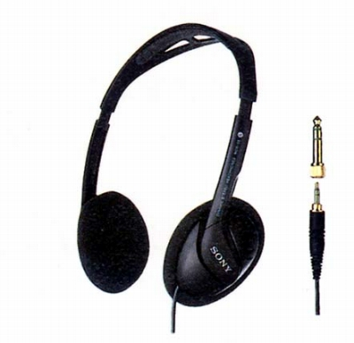

MDR-55

■価格 3,300円■型式 オープンエアダイナミック型■振動板 30�oドーム型■インピーダンス 24Ω■再生周波数帯域 14-24,000Hz■許容入力 100mW■感度 105ｄB/mW■コード 2ｍ OFCリッツ線 ステレオ2ウェイプラグ■重量 65g（コード含まず）■発売 1994年頃■販売終了 ■備考 5ｍコード、ボリューム付きのMDR-AV55(4,400円)あり
ソニーのインデックスへ